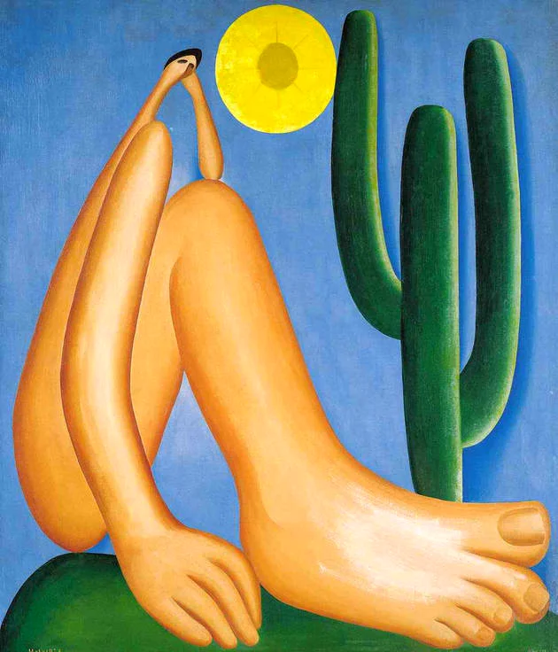

O modernismo foi uma tendência artístico-cultural ocorrida na primeira metade do século XX. Se manifestou em diversos campos das artes, como a pintura, escultura, arquitetura, literatura, dança e música. No Brasil, a linguagem de maior destaque no movimento modernista foi a literária e, assim como as demais, tinha como objetivo questionar e romper com tradições passadas.
O movimento moderno se iniciou na primeira década do século XX, a princípio na Europa, chegando posteriormente ao Brasil por volta dos anos 20. Impulsionados por um contexto histórico conturbado, onde grandes transformações estavam em curso, os artistas e intelectuais modernos passaram a repensar a maneira de produzir arte e literatura. Eles cada vez mais valorizavam um pensamento crítico. Assim, o modernismo acontece em um cenário de conquistas tecnológicas, progresso da indústria, aprofundamento do sistema capitalista e das desigualdades. É nesse momento também que ocorrem grandes conflitos, como a Primeira Guerra Mundial, a Revolução Russa e o surgimento de regimes totalitários. Podemos dizer que a corrente modernista perdurou até os anos 50, após a Segunda Guerra Mundial.
As características que podemos notar no modernismo de maneira geral estão relacionadas à ruptura com os modelos artísticos-literários vigentes e a busca por inovação.
Dessa forma, os modernistas passam a produzir obras transgressoras e com maior liberdade criativa, sem seguir necessariamente regras e padrões. Tanto na literatura como nas demais vertentes artísticas, podemos elencar como particularidades das obras modernistas: Recusa aos moldes acadêmicos; Liberdade criativa e de expressão; Valorização da experimentação; Busca pela aproximação da linguagem popular; Espontaneidade e irreverência; Quebra de formalismos; Ironia e espírito cômico.
Leia mais...